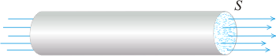
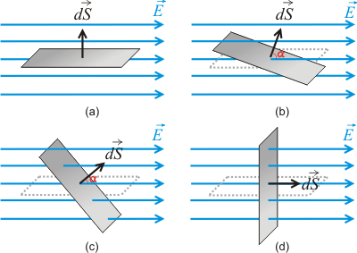
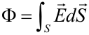
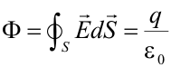

El flujo del campo eléctrico se define de manera análoga al flujo de masa. El flujo de masa a través de una superficie S se define como la cantidad de masa que atraviesa dicha superficie por unidad de tiempo. 
El campo eléctrico puede representarse mediante unas líneas imaginarias denominadas líneas de campo y, por analogía con el flujo de masa, puede calcularse el número de líneas de campo que atraviesan una determinada superficie. Conviene resaltar que en el caso del campo eléctrico no hay nada material que realmente circule a través de dicha superficie.

Una superficie puede ser representada mediante un vector dS de módulo el área de la superficie, dirección perpendicular a la misma y sentido hacia afuera de la curvatura. El flujo del campo eléctrico es una magnitud escalar que se define mediante el producto escalar:

La superficie cerrada empleada para calcular el flujo del campo eléctrico se denomina superficie gaussiana.
Matemáticamente,

La ley de Gauss es una de las ecuaciones de Maxwell, y está relacionada con el teorema de la divergencia, conocido también como teorema de Gauss. Fue formulado por Carl Friedrich Gauss en 1835.
Para aplicar la ley de Gauss es necesario conocer previamente la dirección y el sentido de las líneas de campo generadas por la distribución de carga. La elección de la superficie gaussiana dependerá de cómo sean estas líneas.